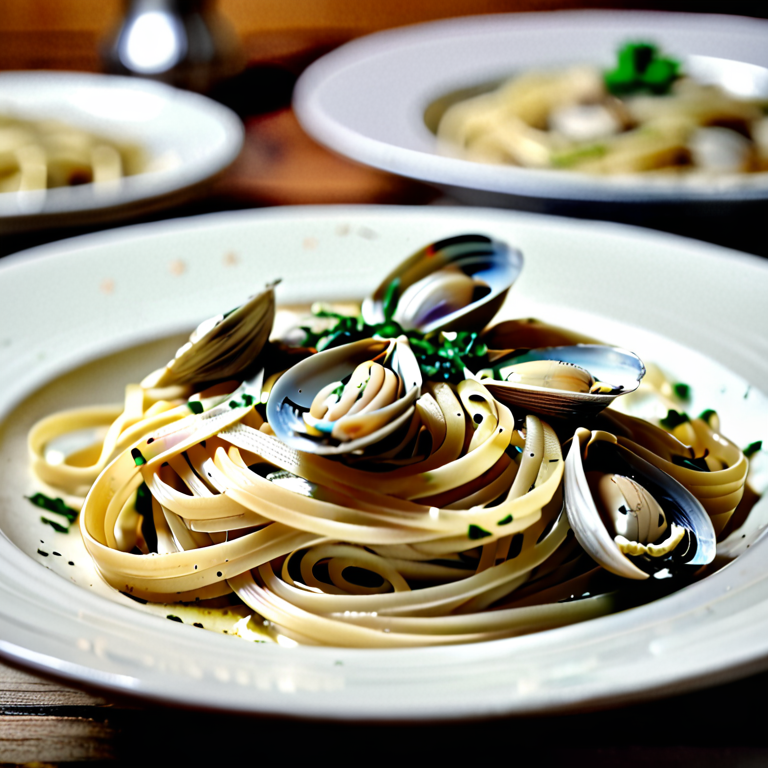

Linguini with White Clam Sauce

Description
An Italian classic dinner you can prepare in under thirty minutes.
Ingredients
- 2 6oz cans of clams
- 1/4 cup of white onion or shallot, minced
- 4 cloves garlic
- 6-8 cremini or portabello mushrooms, sliced
- 1 red bell pepper, diced
- 6 black or kalamata olives, sliced
- 1 tablespoon olive oil
- 2 tablespoons unsalted butter
- 1 tablespoon oregano, chopped or dry
- 1 tablespoon basil, chopped or dry
- 1 teaspoon black pepper
- 1 tablespoon lemon juice, or 1 half lemon, juiced
- 1/4 cup white coooking wine
Steps
- On medium heat, melt butter and heat oil in medium pan.
- Add onions and cook until clear, two to three minutes.
- Add olives, garlic, mushrooms, and clam juice seperated from canned clams, and bring to a boil.
- Reduce heat, add herbs, spices, and remaining liquids. Stir and let simmer two to five minutes.
- Add bell pepper and cook for ten minutes until liquid volume reduces and thickens.
- Remove pan from heat and stir in clams.
- Serve over freshly cooked linguini or pasta of your choice.
Return to Home